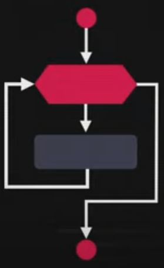

Aula 14 - Repetições (Parte 2)
Nessa aula aprendentemos sobre a estrutura de repetição com variável de controle
- for: A estrutura de repetição for é a estrutura de repetição mais utilizada pelos programadores. Ela é dividida em três blocos, onde:
- o primeiro cria a variavél
- segundo realiza a validação
- e a terceira realizar o incremento da variável

Exemplo: Comer uma pizza de oito pedaços: